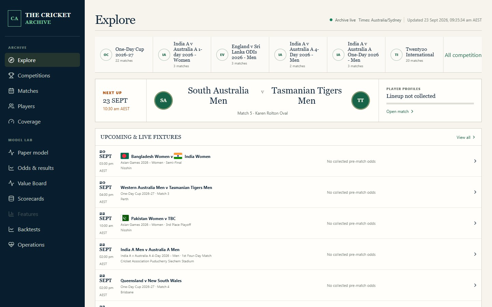

Data engineering / Machine learning / Product development
Cricket Model
A cricket archive and modelling workbench that connects raw sports data to inspectable predictions. The project brings together ingestion, data quality, an API, a research workflow and a browser interface.
Python / FastAPI / React / SQLite

The local application, captured in September 2026. This page is a project walkthrough; the database-backed research app runs locally.
Start with data you can trace
Match results, scorecards and ball-by-ball feeds arrive with different identifiers and levels of completeness. The archive maps these into canonical competitions, seasons, matches and players, while preserving source evidence and coverage information.
Content-addressed source artifacts retain the original inputs. Incremental ingestion can resume after interruption, and identity checks help prevent players with shared names from being merged. These foundations make a prediction easier to investigate when its inputs look wrong.
Make the archive useful
A FastAPI backend serves the normalized SQLite archive to a React interface. Visitors to the local app can explore competitions, matches, scorecards and player careers, then inspect coverage and operational status. Data quality is visible alongside the data itself.
Evaluate against time and a baseline
The research workflow compares a logistic model with an Elo baseline and market-implied probabilities. Expanding-year evaluation and explicit training cutoffs keep the ordering of past results and future predictions visible.
Versioned model artifacts, saved feature snapshots and decision records connect each prediction to the data and configuration that produced it. Calibration, uncertainty and unsuccessful experiments are part of the evaluation, rather than reporting only the best result.
Separate research from prospective evidence
A paper-tracking workflow records simulated decisions and settles them against subsequent results. It preserves timestamps, exclusion reasons and revisions, and never places real bets. The initial retrospective evaluation did not establish a profitable edge; prospective results remain a research question.
What this project demonstrates
End-to-end ownership across data pipelines, entity resolution, backend design, frontend delivery and model evaluation. The central engineering challenge is making the path from source data to model output reproducible and inspectable.